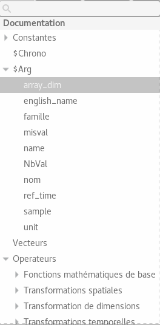
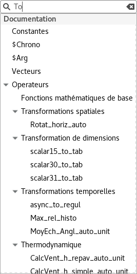

La documentation

Contient la liste de tous les arguments, opérateurs et vecteurs connues.
Si aucune acqid n'est entrée, l'onglet des vecteurs et dès $chrono est vide.
La recherche

Si du texte est entrée dans la zone de recherche, seul les ligne contenant les caractères entrées sont gardés.
Pour afficher de nouveau toute les lignes. Il suffit de vider la zone de recherche.